Imagine being presented with a captivating product—something you never considered but now find yourself intrigued by. The possibilities are endless, whether it’s a stunning piece of art, a luxurious property, or an exquisite car. Now, picture that the seller turns to you, eyes glinting with opportunity, and asks, “How much would you offer?”
Imagine you’ve never bought a similar product. No advisor stands next to you, and you can’t ask any search engine or AI chatbot for a reasonable price. Without any historical data or reference, all you can do is guess.
Many potential buyers find this situation distressing. If they overpay, they might regret their purchase for years. However, offering too little can cause issues. A buyer risks offending the seller or showing everyone around them that they are unaware of the market value, which can jeopardize their reputation.
Historical data provide a solid foundation for informed decisions. For instance, if you know the purchase price of neighboring houses, you can at least estimate the price of real estate (though you could still end up with a lousy deal for various reasons). The more data you have, the easier it is to determine if the price is reasonable.
Technical analysis of financial data is, to a large extent, a study of historical price developments. Knowledge about past movements is good. However, it’s even better when historical prices are visualized, as many people prefer visuals over numbers in tables. Let’s start by looking at charts and how we can interpret them. Afterward, we’ll examine specific charts for investment and explore how to visualize information ourselves.
In previous chapters, we often plotted charts using share prices over time. The idea that charts represent data is, therefore, not a new concept. Once you have price and time, you can plot a chart where the x-axis is usually the time, and the y-axis defines the value of an asset in a currency. Let’s examine a chart without context in figure 10.1.
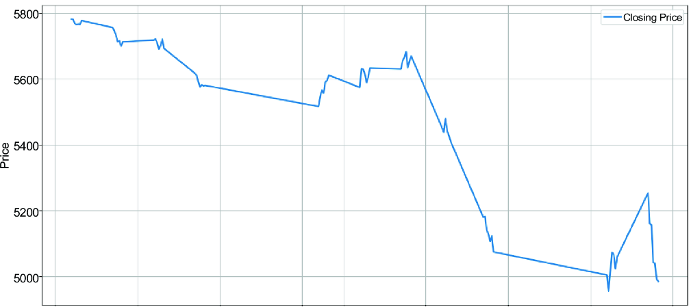
We can start making assumptions if we look at a chart without context. Knowing that the x-axis represents time and the y-axis represents price, we see that the cost of an asset was relatively stable until approximately the middle of the chart. Then something happened, and we had a sharp decline with minor corrections in between. We can make basic observations without context, but to interpret what was going on, we need details. Let’s add some context and examine figure 10.2.
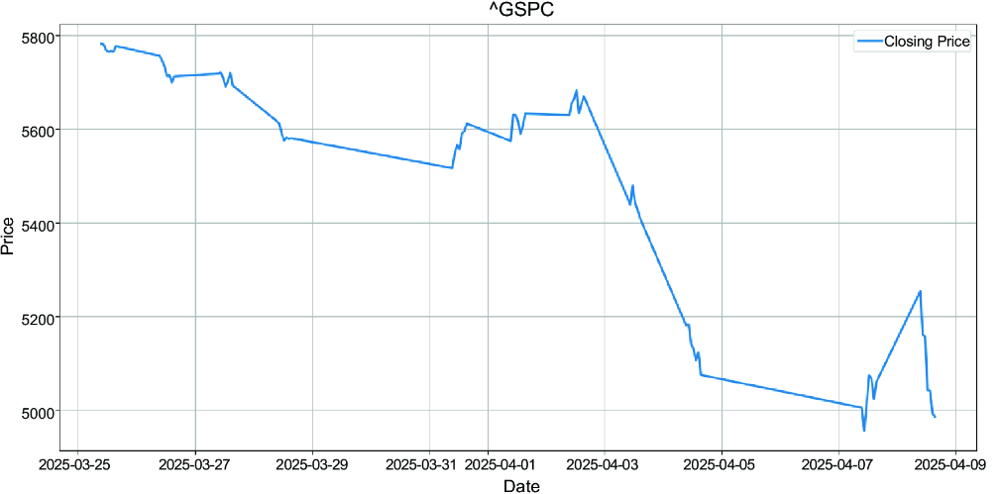
With context, we can give meaning to charts. We understand that we’re looking at the S&P 500. We examine a relatively short interval of a few days, as we have data on the S&P 500 since its inception on March 4, 1957.
If we had the data displayed in the chart as a DataFrame, we would have time series data starting from April 1 at a price of around $5,600 and ending slightly below $5,000. We don’t know how many data points this DataFrame would hold, as this depends on the update frequency. We’ll have 60 times as much data if the data is updated per minute than if it’s updated per hour.
The price of the S&P 500 data has fallen by 11.15%. Someone who had a value of $100,000 in an index fund that mirrors the S&P 500 would lose $11,150 in value within five days. This chart appears alarming to conservative investors, who expect the value of their assets to increase. But at the same time, let’s look at a chart in figure 10.3.
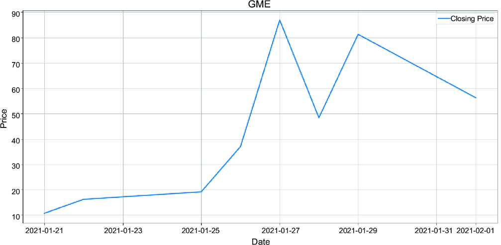
Someone accustomed to price movements, such as those seen with GameStop stock, might find the changes in the S&P 500 less dramatic. After all, an 11% drawdown at an index doesn’t mean the value is likely gone forever. Unless there is a dramatic shift in the global economy, index prices are expected to continue recovering and growing. However, the S&P 500 is an index fund, and comparing it to the share price development of a distressed company is far-fetched. Let’s relate the data to other past stock market crashes to understand what falling by more than 10% means in a short time frame. We see in table 10.1 that losses following President Trump’s announcement of sweeping tariffs on foreign goods were comparable to those in the aftermath of the Lehman Brothers’ collapse.
|
Day
|
Date
|
% Change
|
|---|---|---|
| Black Monday |
October 19, 1987 |
–24.57 |
| Black Tuesday |
October 20, 1987 |
–16.23 |
| Covid-19 pandemic |
March 12, 2020 |
–13.93 |
| Lehman Brothers’ collapse |
November 20, 2008 |
–12.43 |
| US tariff announcement |
April 4, 2025 |
–10.53 |
We can also scale out and examine a larger time interval to determine what a drop in share prices signifies. In figure 10.4, we present the S&P 500 data from November 1996.
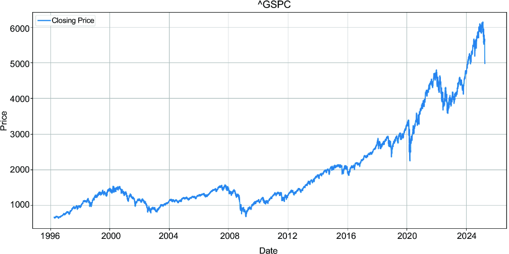
We see some drawdowns in the chart. We see the dot-com crash, the Lehman Brothers’ bankruptcy, COVID, and the start of the Russian invasion of Ukraine. The aftermath of Liberation Day will leave a lasting effect on the chart, one that will remain visible for decades to come. However, even after falling significantly, the S&P 500 remains higher in April 2025 than it was at the beginning of 2024.
Let’s look at other charts and focus on single stocks. In figure 10.5, we examine NVIDIA’s share price development.
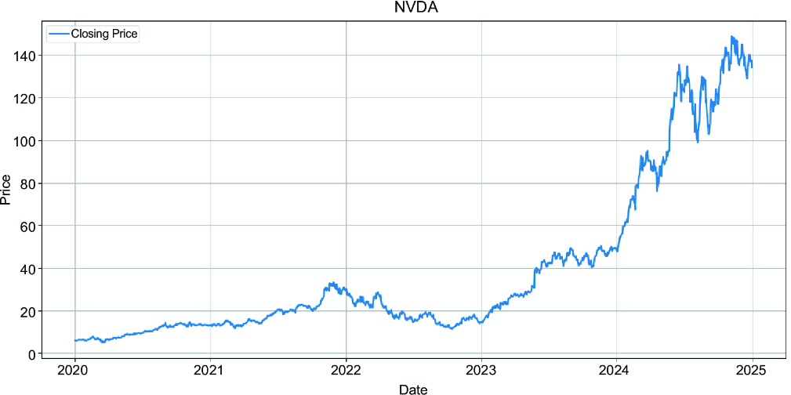
Single stocks are more volatile than indices. A buyer who purchased NVIDIA shares at a price equivalent to $6.65 in 2020 would have made a good decision. After five years, having $120 per share is the fulfillment of every investor’s dream.
Note Remember that NVIDIA has undergone two stock splits since 2020. If you bought one share of stock in January 2020 for $266, it would have been split into 40 shares.
Technology companies often aim for significant growth, relying heavily on being at the forefront of innovation to outperform competitors. Consequently, they usually exhibit a higher price-to-earnings (P/E) ratio and lower dividend payments, as a significant portion of the earnings is reinvested in R&D. If competitors outperform them, a technology company that doesn’t consistently increase its yearly earnings compared to its competitors can be a risky investment.
Figure 10.6 outlines NVIDIA’s earnings. As this company grows and generates more revenue, investors have a positive outlook for a company that continues to grow. Even if NVIDIA’s P/E ratio is higher today than some of its peers, NVIDIA can be a good asset when calculating potential future growth.
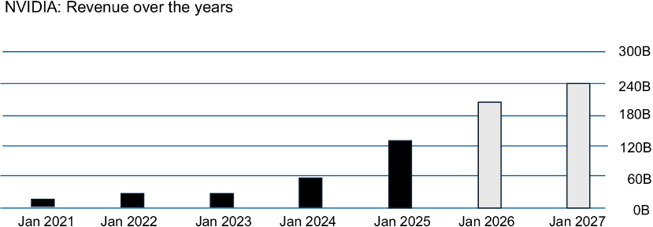
In chapter 7, our portfolio analysis concluded that, based on historical returns, we should allocate a greater weight to Pfizer and NVIDIA in a portfolio. Let’s examine Pfizer in figure 10.7, which tells a different story than NVIDIA’s.
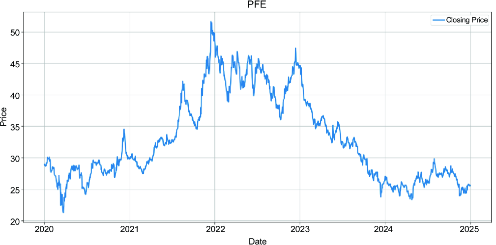
If we bought Pfizer shares in 2020, we would have less value today. Pfizer is a high-dividend-paying stock, meaning we would have received annual payments over the years, which helps balance out some of the missing capital appreciation.
The Pfizer chart reflects the history of COVID-19. This is also reflected in its earnings, as shown in figure 10.8.
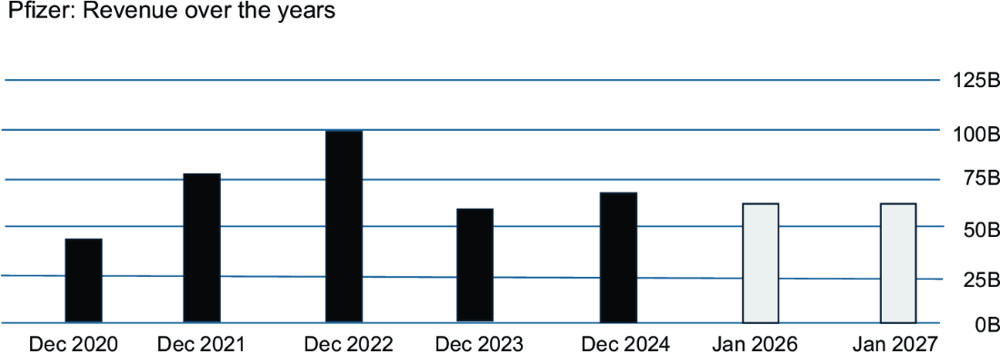
Earnings are a substantial factor for every company. However, we can’t expect constant increases in earnings in every sector. Pfizer investors would have to accept that the earnings during the COVID-19 pandemic’s peak can’t last forever. Still, they can also expect Pfizer to continue generating sufficient revenue to pay good dividends and grow at a steady pace.
Earnings and share prices can correlate. Often, a profitable year is reflected in the share price. Investors watch an earnings call, see tremendous results, and buy shares. If the results are disappointing, they sell. Technical analysis also looks at share prices, but the focus is different. Technical analysis tries to discover patterns in price development to forecast share prices based on these patterns. This may sound like superstition, but if everyone believes in the same patterns, these patterns will reappear because some individuals follow these signals, and then many more follow the herd, causing the repeating trend. Let’s delve deeper by examining charts and defining these patterns that may influence technical analysts’ decisions.
Let’s examine the charts in figure 10.9. These charts show the price developments of assets over the past five years.
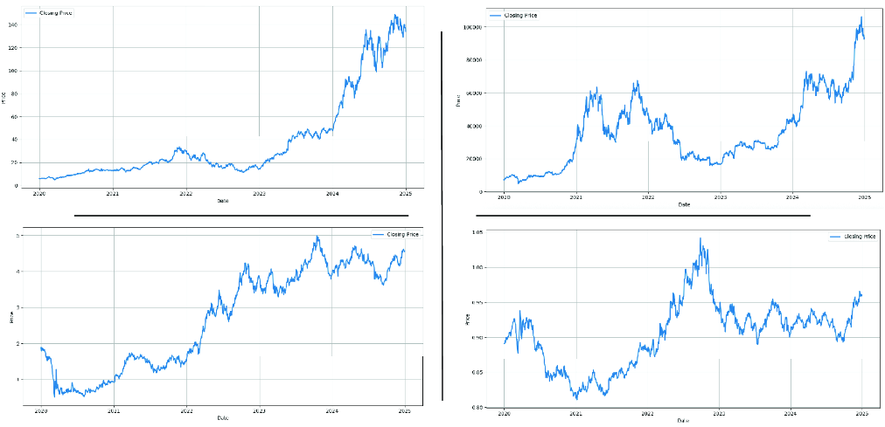
Some talent shows require candidates to solve challenges. If there were a talent show for investors, one of the challenges could be to ask contestants to identify the company when presented with unlabeled charts. Sort of like Name That Tune. Some investors can do that for familiar charts. They might look at Bitcoin and say something like this:
Do you see these two humps on the left? Remember, this was 2021. The year started so well. In May, I thought I was screwed and then in November I cheered again until . . . well you know the story, Luna, FTX, it was a nightmare for a while.
Now, there’s a game show I would watch! Identifying some patterns is a start—even if we don’t have names for them yet—because you create stories based on the patterns. You rose to the stars, to fall again, and then you were reborn to rise like a phoenix again! Some stories of share price developments could be dramatized. Let’s have a closer look.
Let’s examine asset price changes to see if we can identify similarities. The pattern in the Bitcoin chart, which we previously referred to as humps, can be interpreted as a bearish double top. Look at figure 10.10, which depicts this pattern and reflects share price developments (vertical) over time (horizontal).
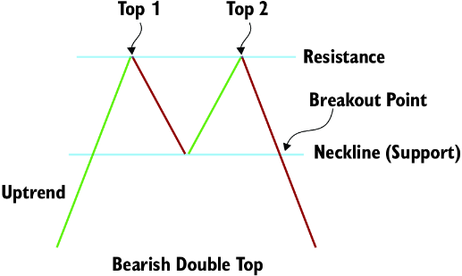
First, we have an uptrend. Traders are excited; they see momentum and expect more gains. The asset price will increase as investors see rewards from buying low and selling high, and continue to buy. Various platforms assess the mood of their clients and provide a fear and greed index about specific assets. In this phase, investors’ sentiment is characterized by extreme greed.
Then, we reach a point where the mood turns, marked in the chart as Top 1. The reasons for the trend reversal can be manifold, but investors likely examined the fundamentals and judged the asset as overvalued following the price increase. People start to sell, and the mood changes. However, enough people still see potential in that asset and begin buying again at some point. The price goes up again. Then, after the second reversal, the price drops again. But this time, the downtrend continues.
You can look up many chart patterns online or in technical analysis documents. They will find many examples, such as the head-and-shoulders, rising wedge, expanding triangle, triple top, or pennant pattern. The basic idea remains the same: there are up-and-down movements, and a trader attempts to identify patterns based on past experiences to predict what comes next. Each pattern has a bearish and bullish form, as shown in figure 10.11.
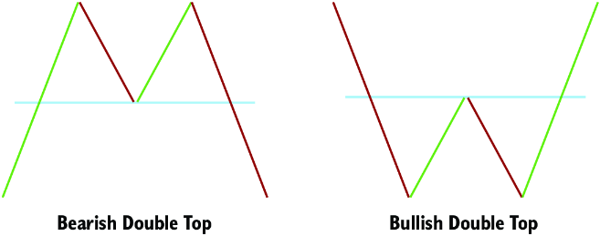
The double top is a reversal pattern. The bearish version starts with an uptrend and ends with a downtrend, and vice versa in the bullish version. It’s also a continuation pattern. It starts with a trend until it gets into an opposite trend, to turn into its original trend again. Figure 10.12 provides an example of bullish and bearish flag patterns as a reference for a continuation pattern. Again, we start with a trend being disrupted by an opposite trend. Eventually, however, the original trend continues in a continuation pattern.
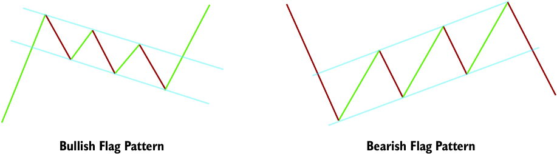
Chart patterns are just templates. “Chart whisperers” have often been wrong in the past. Many of them have misjudged movements, as there is no guarantee that asset prices will always follow the pattern.
When an asset’s price falls, analysts often discuss support lines. A support line is a price level at which an asset is unlikely to fall. Investors also frequently discuss resistance lines, which are high prices that are difficult to break through. Another important term is breakout, when a price crosses a support or resistance line.
Support and resistance lines are essential for investors who explore more volatile assets. At the time of writing, the price of 1 Bitcoin is $78,940. Analysts may suggest that we see a support line at $72,000, which is another way of saying that it’s unlikely for the price to drop below that level unless an external event occurs.
Although support and resistance lines are an interpretation of data, we must not overlook the psychological effect. Imagine a resistance line at $100,000. You see prices going up and down, and when the price is nearing $100,000, you may hear yourself arguing in your head. The more adventurous you might say: “Come on, buddy! Buy! It’s an asset that will always go up in the long run. Today is the day, you’ll see.” The more cautious you will reply to that, something like: “Investors are rational beings. The price of that asset is already so high, and six digits are huge. While you buy below $100,000, others will sell, and the price will decrease. You’ll sit on an asset you can’t sell for profit. Better to wait until the price drops.” Again, your adventurous part might reply, “What if it crosses the resistance line and never goes back? We must buy now, or it’s too late.” While knowing current resistance or support lines is essential for traders, long-term investors may ignore them, as their idea is that assets will continue to grow over a long period.
The shorter the time window you aim to hold an asset, the more critical chart patterns become. Short-term traders tend to borrow resources—using leverage—to buy assets. If they don’t sell soon, they must pay interest.
Conclusively, charts can help traders and investors decide when it’s a good time to buy and sell. Additionally, long-term investors won’t ignore them entirely. Let’s examine how we can interpret a chart.
Many financial analysis platforms such as TradingView, Finviz, and Seeking Alpha provide advanced charting features. They allow you to plot the share prices, and you can add indicators on top of the chart showing price movements. This chapter will show how to plot some of these indicators in later sections using Python. But be aware that the indicators presented in this book, such as moving averages, Bollinger Bands, or Ichimoku Cloud, are a small selection of the existing indicators that advanced charts provide.
Figure 10.13 shows a chart on Finviz.com, which also provides charting functionalities. You can view the chart with the latest data on that asset (NuScale Power Corporation) at https://finviz.com/quote.ashx?t=SMR&p=d. The screenshot is based on data from June 13, 2025.
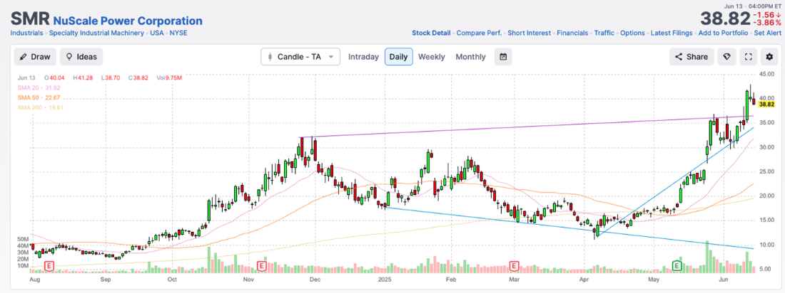
Technical investors attempt to identify bearish and bullish patterns based on such charts. You can even paste screenshots like the previous one into a GenAI chatbot and ask the LLM to recognize patterns. It will return interpretations and, in some cases, even speculate on possible price developments based on signals such as a golden cross in late May, which describes that an SMA 50 crossed above the SMA 200 (we’ll investigate simple moving averages [SMAs] later in this chapter).
Some investors argue that the effectiveness of technical analysis hasn’t been proven and consider it a form of gambling. Others will tell you they start making money if they are successful, just 51% of the time. Whether you try to leverage price patterns for short-term trading or not, reading charts is also essential for long-term investors, as they tell an important story over time.
An asset has momentum, which is often reflected in patterns on the chart. Time is also an essential aspect of reading a chart. While a share price might decrease in the short term, a long-term trader may not be overly concerned if they still see a long-term upward trend. A short-term trader who has borrowed money to buy leveraged assets must make decisions earlier, as they must pay interest on the borrowed funds.
Technical traders develop algorithms to analyze moving averages, Bollinger Bands, Fibonacci retracements, Elliott waves, and other technical indicators. Many technical investors employ SMA crossover strategies, such as the 200-day SMA versus the 5-day SMA. Let’s look at some of these principles to understand what this is all about.
While we primarily use line charts to visualize the price of an asset over time, investors often employ other chart types as well. Let’s explore some of them.
Treemaps have become popular on platforms such as Finviz. They show the growth and fall of prices. Figure 10.14 shows the treemap displayed on Finviz.
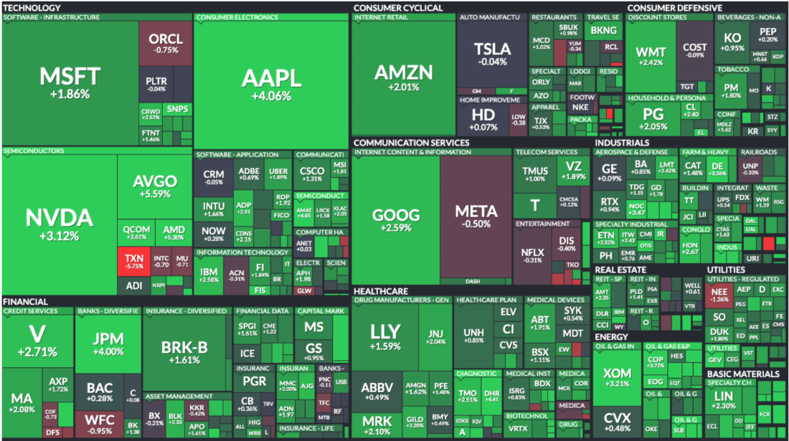
Bar charts can help show the distribution of elements within a category. Again, Finviz provides an excellent example that can be explored at https://finviz.com/groups.ashx. In figure 10.15, we can see which sectors did well within one day. Finviz also provides bar charts that reflect the performance of assets over an extended period.
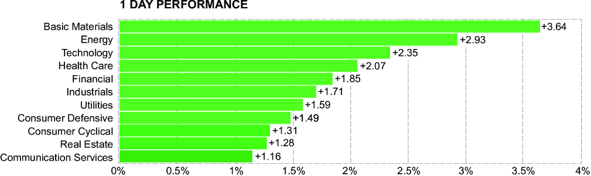
Histograms plot the distribution of values for a numeric variable as a series of bars, so we can use them to validate whether the data follows a Gaussian distribution. In chapter 7, we used a histogram in a Monte Carlo simulation to display returns, as shown in figure 10.16. Here, we have them distributed well-balanced over a Gaussian curve.
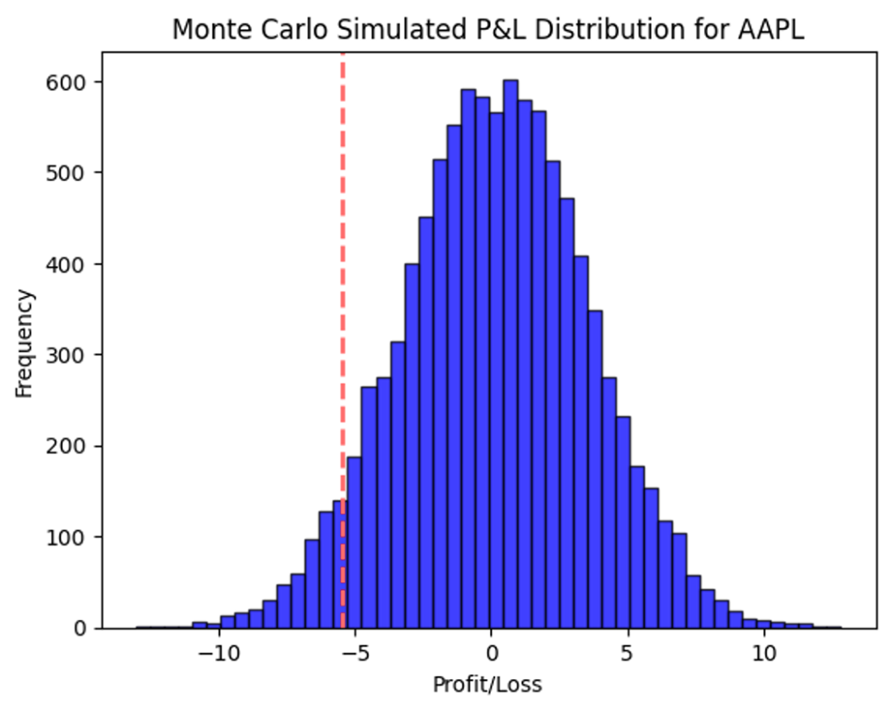
In chapter 8, we used a scatterplot to plot companies. A scatterplot helps to identify interesting assets if you group multiples of them based on various criteria. For example, if we’re interested in examining multiple assets based on risk and returns, we can plot them in a scatterplot with risk and return axes, as shown in chapter 8.
We again display the figure from chapter 8 in figure 10.17 to immediately illustrate the value of a scatterplot. We see three outliers. The dot on the far left represents an asset that has lost significant value. If we hovered over the dot, we would know that it’s Moderna, a capital-intensive business that is, among other things, affected by high federal interest rates. The topmost dot represents Super Micro Computer, a semiconductor company that had been in turmoil due to its failure to report on time, which caused its share price to plummet. On the far right, we have Palantir, whose high returns are also reflected in its P/E ratio, as indicated by a review of that ratio.
We learned how charts can help us gain faster insights than viewing the raw data. In a sense, charts are a shortcut to data analysis. Now, we shift our focus slightly toward analyzing price movements by putting them into context, which is essential for some investment and trading strategies.
At the beginning of this chapter, we highlighted that a price tag without additional knowledge and context can be confusing. Something we want to buy has an intrinsic value, also called the real value. The essential pattern in trading goods that existed already before the advent of money was to get a better value in goods exchange. This universal principle also applies to securities: we can make good or bad deals depending on the price we pay to acquire an asset.
When studying fundamentals, as we did in the previous chapters, we examine a company’s details to determine whether an asset has lost or gained value. Efficient market theorists, such as Eugene Fama, say that assets are priced approximately at their worth unless you’re an insider and know things the rest of the investors can’t know. Some experts disagree with the efficient market theory, as some investors have repeatedly beaten the market.
By analyzing fundamentals, you determine what you believe the company is worth. You investigate changes in balance sheets and other documents to hypothesize whether an asset is undervalued or overvalued based on changes within the company. Analyzing price development in charts is a different approach, often called technical analysis. In this aspect, you examine price developments over time concerning what the market thinks the company is worth to determine trends, so you time your purchases accordingly. Let’s get started.
Candlestick charts visualize price movements in financial markets. They provide insights into market sentiment and show how prices fluctuate within a given time frame.
A candlestick chart is like a time series plot, but enhanced with additional information about a stock, cryptocurrency, or other financial asset’s open, high, low, and close (OHLC) prices. Let’s look at the anatomy of candlesticks to see how they work.
Figure 10.18 shows NVIDIA’s candlestick chart for three trading days with each candlestick representing a day in this chart. Time is scalable, meaning we can view it in terms of hours or months in such a chart.
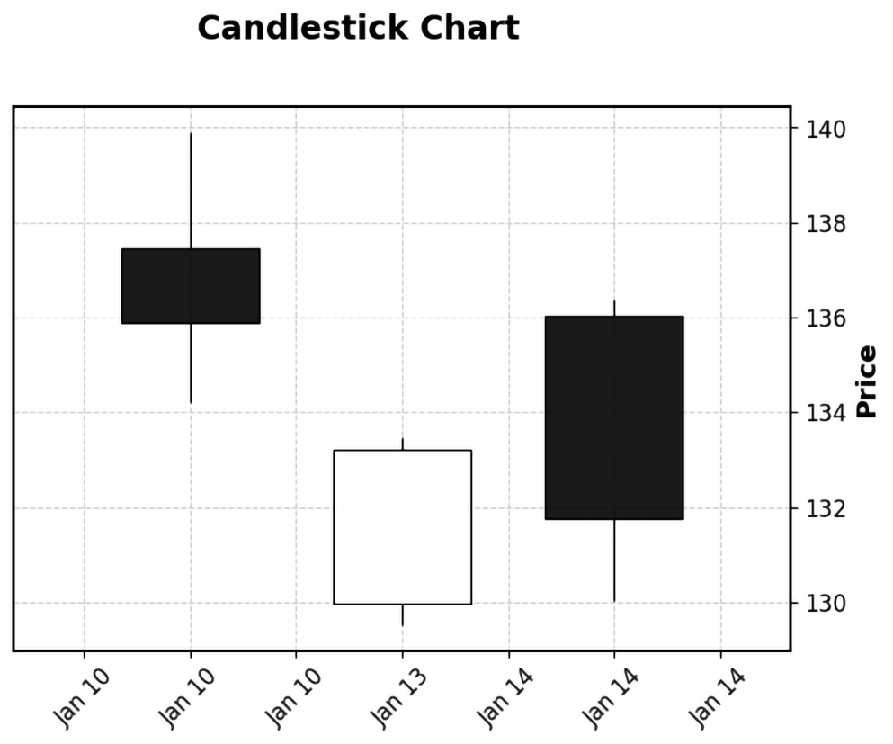
Candlesticks use different schemata. On most platforms, the schema is represented by green and red colors. White and black are also common for other use cases, such as in print media like this book. If the candlestick is green or white, it means that, within the specified period—one day in our example—the closing price is higher than the opening price, indicating a bullish movement. If the closing price is lower than the opening price, the body is red or black, indicating a bearish movement (the price has decreased). If you’re interested in seeing charts as examples, you can explore platforms such as Finviz (https://finviz.com) or TradingView (www.tradingview.com), where you can drill down into charts and zoom in on specific days to examine details. It’s also often helpful to study charts of companies you know, as you can usually see how investors reacted to specific catalysts affecting your company (see chapter 11).
Figure 10.19 shows the anatomy of a candlestick. The height of the candle’s body represents the difference between the opening and closing prices. The wicks, also known as shadows, represent the highest and lowest prices reached during the trading period, as depicted by a candle. The upper wick extends from the top of the body to the highest point, and the lower wick extends from the bottom to the lowest point.
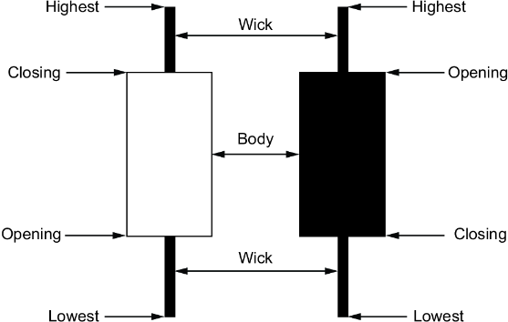
Knowing all of this and referring to figure 10.18 shown earlier, the share price began at $138 on January 10th. It rallied up during the day until it reached $140, but it also fell at some point to a bit above $134, to end a bit below $136.
To create a plot similar to the figure 10.19, we need the mplfinance library, a Python library for financial data visualization. We load data from NVIDIA and plot it as shown in listing 10.1. We get the same result as in figure 10.6 earlier.
import mplfinance as mpf import pandas as pd import yfinance as yf ticker = "NVDA" data = yf.Ticker(ticker).history(start="2025-01-10", end="2025-01-15") df = pd.DataFrame(data).dropna() mpf.plot(df, type='candle', style='charles', title='Candlestick Chart')
Now, let’s examine candlestick patterns in more detail to understand how we can interpret their price movements. For that, we need to examine multiple consecutive days.
Candlestick patterns enable traders and investors to interpret price action quickly. We can detect market trends, reversals, and continuation patterns by analyzing multiple candles, such as the following:
Some patterns are commonly used to predict price movements, as shown in figure 10.20:
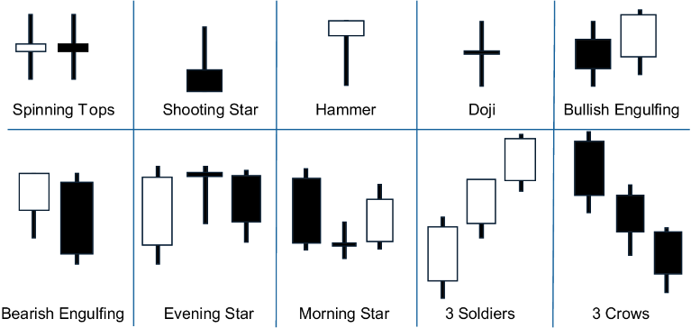
Using the terminology from the figure, we can describe the patterns. A Spinning Top is a pattern in which, on two consecutive days, we experience high price volatility during the trading day but end up with a Doji. As another example, a Shooting Star is a pattern that has a high volatility during the day, and then the closing price is lower than the opening price. Being able to give the patterns names facilitates discussions about trends with other investors.
Now that we know how to interpret candlesticks, we can investigate averages over multiple periods to gain a deeper understanding of the share price development. Let’s discuss that next.
At the beginning of the chapter, we highlighted the importance of data about past purchases. Imagine an item listed for $100. Knowing that similar items have been sold for $80 on average will lead you to consider it differently than knowing that the item is usually sold for $120.
When working with shares with frequent price changes, we must examine price developments over an extended period. In addition to highs and lows, one central benchmark is the average price: you have three numbers—let’s take 1, 2, and 3—and everyone with basic math skills knows that the average is 2. Let’s explore some more complex scenarios.
Let’s take the closing price of a stock for x days and calculate the average by adding all values and dividing them by the total number of values. If we look at changes over time, we set a window (say 20 days) and calculate the average. When we add a new value to an existing set of 20 days, we remove the oldest value from the set. This is that simple moving average (SMA) that we mentioned earlier in the chapter.
We might wonder if it’s efficient to weigh all numbers the same. Would it not make sense to weigh the more recent values higher than the oldest ones? For this reason, other average calculation formulas incorporate weighting, such as the exponential moving average (EMA), weighted moving average (WMA), and Hull moving average (HMA), which we explore in this chapter. The goal is to smooth price data and identify trends earlier. As different average calculations have different goals, they target different scenarios.
In listing 10.2, we create a data set for demonstration and then apply the SMA and EMA. The EMA weights the later values more. We define a set of random data and use the algorithms.
import pandas as pd
data = {
"Date": pd.date_range(start="2023-01-01", periods=10),
"Price": [10, 11, 12, 13, 14, 15, 16, 17, 18, 19],
}
df = pd.DataFrame(data)
window_size = 3
df['SMA'] = df['Price'].rolling(
window=window_size).mean() #1
df['EMA'] = df['Price'].ewm(
span=window_size, adjust=False).mean() #2
Looking at the results, the EMA returns a slightly higher result (17.003906) for the mean of 16, 17, and 18 than 17, which would be the result of SMA based on these numbers. These differences don’t seem significant unless you consider large transactions. If you trade millions, it will have a considerable effect. Let’s compare data using historical share prices and add the remaining two average calculations.
Note We’ll use an option to limit floating-point numbers behind the decimal point, using the following parameter to enhance visualization: pd.options .display.float_format = '{:,.2f}'.format.
The WMA also weights averages, but unlike the EMA, it does this linearly, balancing some of the differences between the EMA and SMA. The HMA uses the WMA as a base to smooth out the extra by adding half the time window and the square root of the time window in the calculation. If you’re interested in the details, you can look up the math; in brief, the formula is HMA > WMA > EMA > SMA. The further to the left, the more sensitive our calculations are to recent changes. Let’s look at the Python implementation in the following code:
def weighted_moving_average(prices, window):
weights = np.arange(1, window + 1)
return prices.rolling(window).apply(
lambda x: np.dot(x, weights) / weights.sum(), raw=True)
def hull_moving_average(prices, window):
half_window = int(window / 2)
sqrt_window = int(np.sqrt(window))
wma_half = weighted_moving_average(prices, half_window)
wma_full = weighted_moving_average(prices, window)
hma = weighted_moving_average(2 * wma_half - wma_full, sqrt_window)
return hma
Now that everything is defined, let’s load data from NVIDIA for 2024 and compare the results. In the following code, we load the data and add all averages of the closing prices to the DataFrame.
import yfinance as yf
ticker = "NVDA"
data = yf.Ticker(ticker).history(start="2024-01-01", end="2024-12-31")
averages = pd.DataFrame(data).dropna()
averages.reset_index(inplace=True)
def add_averages(close, window_size):
close['SMA'] = close['Close'].rolling(window=window_size).mean()
close['EMA'] = close['Close'].ewm(span=window_size, adjust=False).mean()
close['WMA'] = weighted_moving_average(close['Close'], window_size)
close['HMA'] = hull_moving_average(close['Close'], window_size)
return close[['Date', 'Close', 'SMA', 'EMA', 'WMA', 'HMA']]
Examining the data, we observe that the larger the window we use, the more not a number (NaN) values we encounter at the beginning of the DataFrame. We’ll confirm that each average has slightly different values. Let’s extract a single entry and look at it. In table 10.2, we display the average for a 3-day window on February 2, 2024. In the row below, we show the average for a 20-day time window on the same day.
|
Window (days)
|
Closing
|
SMA
|
EMA
|
WMA
|
HMA
|
|---|---|---|---|---|---|
| 3 |
66.14 |
63.55 |
64.29 |
64.33 |
67.96 |
| 20 |
66.14 |
58.33 |
58.83 |
60.60 |
64.19 |
Examining the EMA, WMA, and HMA, we can conclude that the more recent data is weighted, the closer the results will be to the closing price of the last day. The SMA is further away from the closing price. We can also conclude that the SMA reacts more slowly to price changes than other moving averages. This doesn’t have to be negative; if we look for long-term trends, recent spikes wouldn’t bother us. We can sum up with the following conclusions:
We can also create another hypothesis. Regardless of which moving average we use, we can also employ different time windows, which provide us with distinct insights. Let’s look at that next.
Moving average ribbons visualize trend strengths: narrow ribbons indicate consolidation, and wide ribbons show strong trends. In listing 10.3, which plots moving average ribbons, we use six windows: 10, 20, 30, 40, 50, and 60.
import yfinance as yf
import matplotlib.pyplot as plt
ticker = "NVDA"
df = yf.Ticker(ticker).history(start="2024-01-1", end="2025-01-1")
df.reset_index(inplace=True)
periods = [10, 20, 30, 40, 50, 60] #1
for period in periods: #1
df[f"SMA_{period}"] = df["Close"].rolling(
window=period).mean() #1
plt.figure(figsize=(12, 6))
plt.plot(df["Date"], df["Close"], label="Price", color="black", linewidth=1.5)
for period in periods:
plt.plot(df["Date"], df[f"SMA_{period}"], label=f"SMA {period}")
plt.title("Moving Average Ribbon")
plt.xlabel("Date")
plt.ylabel("Price")
plt.legend()
plt.grid()
plt.show()
The results are shown in figure 10.21. We observe fewer movements in May and October, indicating that the price has been more stable than at other times, where the ribbons are more spread out.
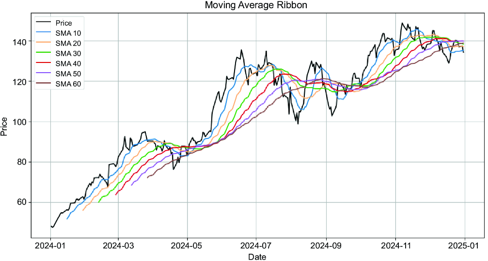
Note We’ll explore multiple SMA trading strategies in chapter 11. In that chapter, we’ll also examine optimal time windows for trading strategies and investigate whether standard parameters, such as the SMA 50 versus the SMA 200, are optimal.
Let’s look at Bollinger Bands next to understand better how we can show overbought or oversold conditions more clearly.
Bollinger Bands is a popular technical analysis tool that measures price volatility and identifies overbought or oversold conditions in a security. They use the following parameters:
Let’s use Python code to plot Bollinger Bands and then interpret them. We collect technical data from a stock and calculate the bands with the parameters defined in listing 10.4. We first load stock tickers. Then, we define 20 as the default window and calculate the necessary values for the bands described in the preceding list. Lastly, we plot the Bollinger Bands.
import yfinance as yf
import pandas as pd
import matplotlib.pyplot as plt
ticker = "NVDA"
data = yf.download(ticker, start="2024-01-01")
window = 20 #1
std_dev_factor = 2 #1
data['SMA'] = data['Close'].rolling(
window=sma_window_length).mean() #1
rolling_std = data['Close'].rolling(
window=sma_window_length).std() #1
data['rf'] = (rolling_std * std_dev_factor) #1
data['upper'] = data['SMA'] + data['rf'] #1
data['lower'] = data['SMA'] - data['rf'] #1
plt.figure(figsize=(12, 6))
plt.plot(data.index, data['Close'], label="Close Price", color="blue",
linewidth=1)
plt.plot(data.index, data['SMA'], label=f"{window}-Day SMA",
color="orange", linewidth=1.5)
plt.plot(data.index, data['upper'], label="Upper Bollinger Band",
color="green", linestyle="--", linewidth=1)
plt.plot(data.index, data['lower'], label="Lower Bollinger Band",
color="red", linestyle="--", linewidth=1)
plt.title(f"Bollinger Bands for {ticker} (20-day window)", fontsize=14)
plt.xlabel("Date", fontsize=12)
plt.ylabel("Price", fontsize=12)
plt.legend()
plt.grid(alpha=0.3)
plt.show()
Figure 10.22 shows the Bollinger Bands. The plot represents all the lines we’ve created based on the preceding formulas. Now, we should see more evident upper and lower barriers.
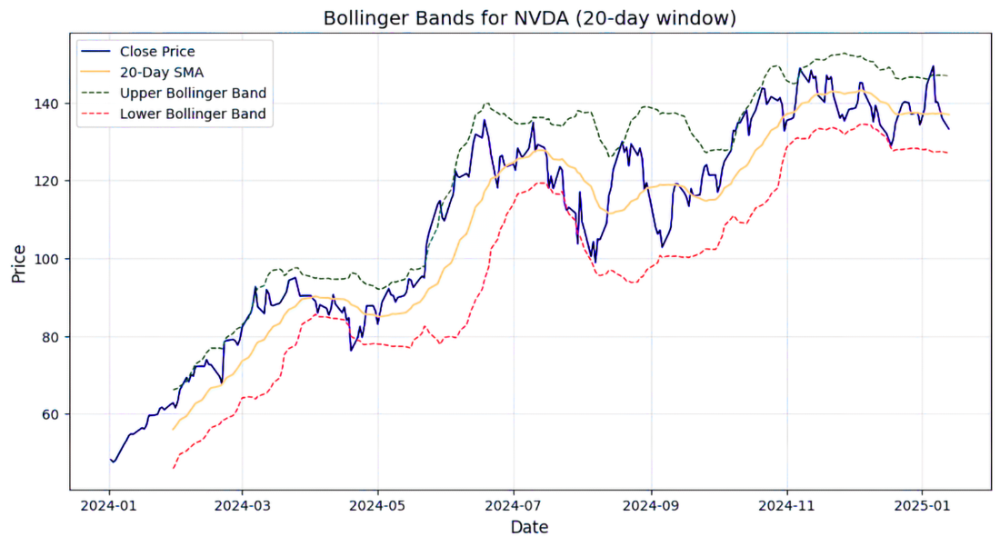
Bollinger Bands expand during periods of high volatility and contract during periods of low volatility. Around August 2024, the closing price also exhibited significant fluctuations. Typically, following periods of high volatility, we experience a phase of contraction, indicating a consolidation period and a potential breakout.
Prices tend to stay within the band. We attempt to identify moments when it deviates, which signals price action, potential trend continuation, or reversal. In late April 2024, the share price was below 80 and crossed the lower band, signaling a possible buy opportunity. At the same time, around 2024-06, we have a sell signal. While buying in April 2024 would have led to profits, the sell signal in June 2024 would have resulted in losses if we hadn’t identified this as a strong uptrend, which likely would have rendered the sell signal obsolete.
In chapter 11, we’ll test strategies using backtesting. But let’s move forward to the next indicator.
The Moving Average Convergence Divergence (MACD) is a momentum-based technical indicator used to spot potential buying or selling opportunities in the market. It analyzes the relationship between two moving averages of a share price: the short-term and long-term moving averages. Let’s examine the details of MACDs. As we can see, we use different window sizes or periods to detect buy or sell signals:
Let’s examine the code in listing 10.5. In the calculate_macd method, we calculate the EMA_12 and EMA_26 based on the close price. With that, we get the MACD and, consequently, the signal line. After calculating the MACD parameter, we plot the MACD chart using the method plot_macd.
import pandas as pd
import matplotlib.pyplot as plt
def calculate_macd(data, short_window=12, long_window=26, signal_window=9):
data['EMA_12'] = data['Close'].ewm(
span=short_window, adjust=False).mean() #1
data['EMA_26'] = data['Close'].ewm(
span=long_window, adjust=False).mean() #1
data['MACD'] = data['EMA_12'] - data['EMA_26'] #1
data['Signal_Line'] = data['MACD'].ewm(
span=signal_window, adjust=False).mean() #1
return data
def plot_macd(data):
plt.figure(figsize=(12,6))
plt.plot(data.index, data['MACD'], label='MACD', color='blue')
plt.plot(data.index, data['Signal_Line'],
label='Signal Line', color='red')
plt.bar(data.index, data['MACD'] - data['Signal_Line'],
label='Histogram', color='gray', alpha=0.5)
plt.legend(loc='best')
plt.title('MACD Indicator')
plt.xlabel('Date')
plt.ylabel('MACD Value')
plt.grid()
plt.show()
import yfinance as yf
ticker = "NVDA"
df = yf.Ticker(ticker).history(start="2024-01-01")
df = calculate_macd(df)
plot_macd(df)
We obtain the data from NVIDIA in a chart, as shown in figure 10.23. We can then examine historical buy and sell signals.
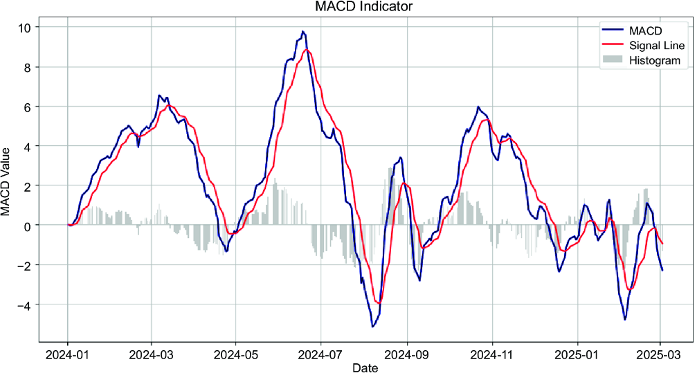
Buy and sell signals are identified by crossover signals. We have a bullish signal when the MACD line crosses above the signal line. We see them before March 2024 and again in May 2024. A bearish signal occurs when the MACD line crosses below the signal line. This indicates downward momentum and may suggest a potential selling opportunity, particularly near or around April 2024. We also need to examine the zero-line crossings and conclude that the sentiment was more bearish in March 2025 than in March 2024.
The larger the histogram bars grow, the more it suggests increasing momentum in the current trend. Shrinking bars indicate weakening momentum, which might hint at an impending reversal.
Understanding MACD can be particularly useful if you build or use algorithmic trading systems. While MACD is a powerful tool, it’s not foolproof. It may produce false signals in choppy or sideways markets. For confirmation, it’s best used with other indicators or fundamental analysis.
In chapter 11, we’ll also examine how we can back-test such strategies and how much money we would have made or lost if we had used this strategy for buying or selling. Let’s explore the next technical indicator.
The Ichimoku Cloud (or just Ichimoku) is a charting technique used in technical analysis that provides a comprehensive view of price action by incorporating trend, momentum, and support and resistance levels in a single chart. Unlike SMAs or candlesticks, the Ichimoku offers a multidimensional approach to understanding market conditions.
Note The Ichimoku Cloud often uses Japanese terms for its key elements. They have been omitted from this book for clarity and brevity. You can look them up on Investopedia or similar sites.
Although it may appear complex initially, breaking it down into its components makes it much easier to understand. The Ichimoku consists of five key elements:
We adjust the time windows for the averages accordingly. The conversion line has a lower window (nine days), and the baseline has longer time windows. We also use the base and conversion lines to calculate other lines, as demonstrated in the code.
Let’s implement the Ichimoku using Python and Matplotlib in listing 10.6. We reload the NVIDIA data, calculate all parameters, and then plot them.
import yfinance as yf
import matplotlib.pyplot as plt
ticker = "NVDA"
data = yf.Ticker(ticker).history(start="2024-01-10", end="2025-01-15")
df = pd.DataFrame(data).dropna()
df.reset_index(inplace=True)
df["ConversationLine"] = (df["Close"].rolling(
window=9).max() + df["Close"].rolling(
window=9).min()) / 2 #1
df["BaseLine"] = (df["Close"].rolling(
window=26).max() + df["Close"].rolling(
window=26).min()) / 2 #1
df["SpanA"] = ((df["ConversationLine"]
+ df["BaseLine"]) / 2).shift(26) #1
df["SpanB"] = ((df["Close"].rolling(
window=52).max() + df["Close"].rolling(
window=52).min()) / 2).shift(26) #1
df["LaggingSpan"] = df["Close"].shift(-26) #1
plt.figure(figsize=(12, 6))
plt.plot(df.index, df["Close"], label="Close Price", color="black")
plt.plot(df.index, df["ConversationLine"], label="ConversationLine",
color="red")
plt.plot(df.index, df["BaseLine"], label="BaseLine", color="blue")
plt.fill_between(df.index, df["SpanA"], df["SpanB"],
where=df["SpanA"] >= df["SpanA"], color="lightgreen", alpha=0.5)
plt.fill_between(df.index, df["SpanA"], df["SpanB"],
where=df["SpanA"] < df["SpanB"], color="lightcoral", alpha=0.5)
plt.plot(df.index, df["LaggingSpan"], label="LaggingSpan", color="purple", linestyle="dotted")
plt.title("Ichimoku Cloud")
plt.legend()
plt.show()
Now, let’s look at the plot results in figure 10.24. We can see that we had essentially a bullish momentum, as evidenced by the many green (light gray in grayscale) clouds.
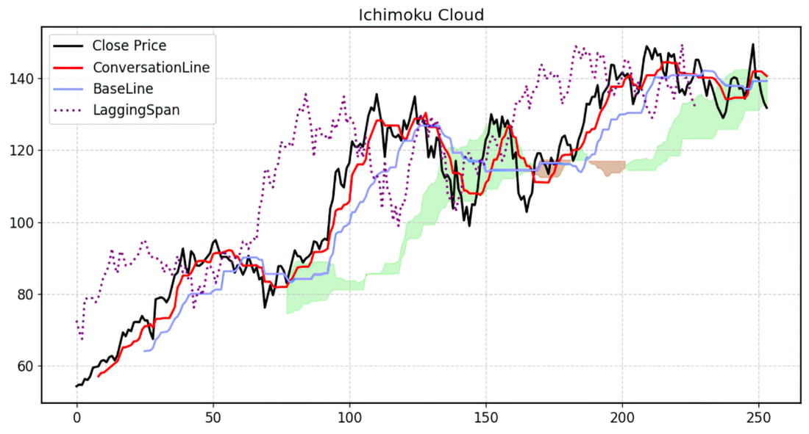
The space between spans A and B forms the Ichimoku Cloud, and green (light gray in grayscale) means that span A is above span B. It’s a bullish signal. If span B is above span A, the cloud is red (dark gray in grayscale), a bearish signal.
The cloud acts as support in an uptrend and resistance in a downtrend. We can use them to identify trends:
We can also look for buy and sell signals:
The cloud acts as support in uptrends and resistance in downtrends. A thicker cloud suggests stronger support or resistance, making it harder for the price to break through.
In certain situations, it can be beneficial to visualize results online. Although some of you may have experience with advanced web technologies, others may not want to delve into a powerful but complex solution. We need a technology that keeps visualization simple and straightforward.
One way to quickly generate web UIs is to use the Streamlit library, which can be installed as a Python package. Streamlit allows us to define web controls, and once we execute the Python files, it generates a local web page. Note that we use traditional Python files in the following example (ending with the .py extension), not the data science notebooks used throughout the rest of the book.
Listing 10.7 provides a simple example of plotting returns. We have multiple predefined tickers and define input controls to collect the start and end times of the plot. The code’s logic checks whether one or more stocks have been selected. If we have the data, we calculate the returns and plot a line chart.
import streamlit as st
import pandas as pd
import yfinance as yf
st.title("Finance Dashboard")
tickers = ('TSLA', 'AAPL', 'MSFT', 'ETH-USD', 'BTC-USD')
dropdown = st.multiselect("Select Ticker", tickers)
start = st.date_input('Start Date', pd.to_datetime('2024-01-01'))
end = st.date_input('End Date', pd.to_datetime('today'))
def relativeret(df):
rel = df.pct_change()
cumret = (1+rel).cumprod() -1
cumret = cumret.fillna(0)
return cumret
if len (dropdown) > 0:
df = relativeret(yf.download(dropdown, start=start, end=end))['Close']
st.header(f"Returns of {dropdown}")
st.line_chart(df)
We start the Streamlit website by calling the Streamlit application on the command line using the syntax streamlit run <pythonfile>. We need to open our web browser and follow the directions in the command line to view a figure similar to the one displayed in figure 10.25.
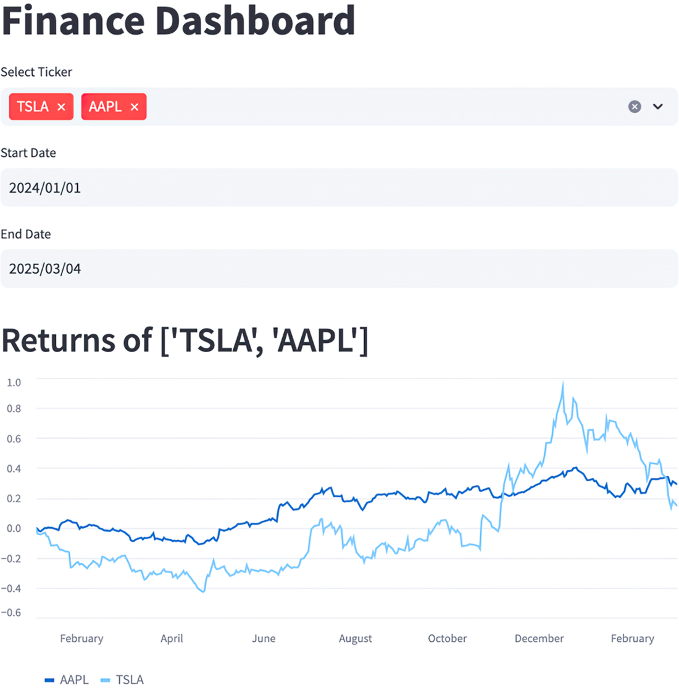
Now that we understand the principles of Streamlit, we can plot moving average ribbons, Bollinger Bands, MACDs, and candlesticks. In the code shown in listing 10.8, we use select boxes instead of multi-select controls, as in the previous examples, because we’ll always examine one company at a time. Be aware that this listing omits the logic for Bollinger Bands, MACDs, and moving average ribbons, as it’s identical to the code previously shown in the listings and has been incorporated into methods. The complete code for this chapter, as well as the code for the other chapters, is available for download from the Manning site for this book. We added the technique to display a plot from the Streamlit library, mplfinance, for the candles. As with mplfinance, you need to pass a specific parameter, returnfig=True, so that the plots can be plotted correctly. To display a selected chart, we pass a method parameter to the method and call it to create the plot, which will then be plotted.
import streamlit as st
import pandas as pd
import yfinance as yf
import matplotlib.pyplot as plt
import mplfinance as mpf
st.title("Technical Analysis")
ptype = ('NONE', 'MA', 'BOLL', 'MACD', 'CANDLE', 'CLOUD')
tickers = ('TSLA', 'AAPL', 'MSFT', 'ETH-USD', 'BTC-USD')
dropdown = st.selectbox("Select Ticker", tickers)
plot = st.selectbox("Select Plot", ptype)
start = st.date_input('Start Date', pd.to_datetime('2024-01-01'))
end = st.date_input('End Date', pd.to_datetime('today'))
def bollinger(data):
pass
def macd(data):
pass
def ma(data):
pass
def cloud(data):
pass
def candle(data):
fig, ax = mpf.plot(data, type='candle',
style='charles',figsize=(15,10), title='Candlestick Chart', returnfig=True)
return fig
def plot_ta(title: str, method): #1
st.header(title) #1
plt = method(df) #1
st.pyplot(plt) #1
if len (dropdown) > 0 and plot != 'NONE':
df = yf.Ticker(dropdown).history(start=start, end=end)
match(plot):
case 'BOLL':
plot_ta("Bollinger bands", bollinger)
case 'MA':
plot_ta("Moving Average Ribbons", ma)
case 'MACD':
plot_ta("MACD", macd)
case 'CANDLE':
plot_ta("CANDLE", candle)
case 'CLOUD':
plot_ta("CLOUD", cloud)
In figure 10.26, we can see a reference example of the result using Bollinger Bands. If you run the Streamlit application downloadable from the GitHub repository for this book, you’ll also be able to plot other charts.
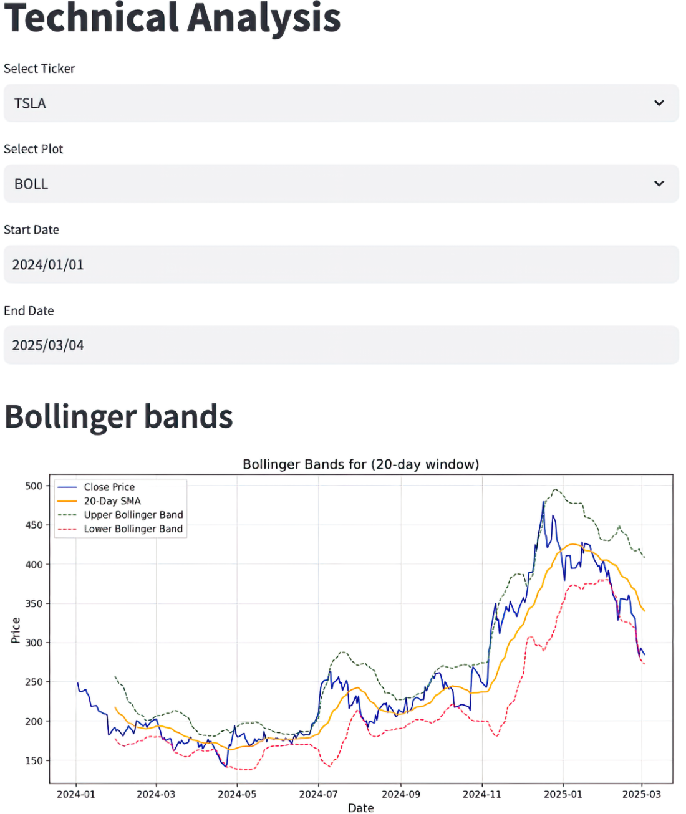
To sum it all up, even if you’re not a technical trader who identifies buy or sell opportunities based on chart patterns, charts can help you understand better how share prices are evolving. You can use charts to identify potential weak points in your portfolio and combine this analysis with a reevaluation of your investment thesis for the stock.